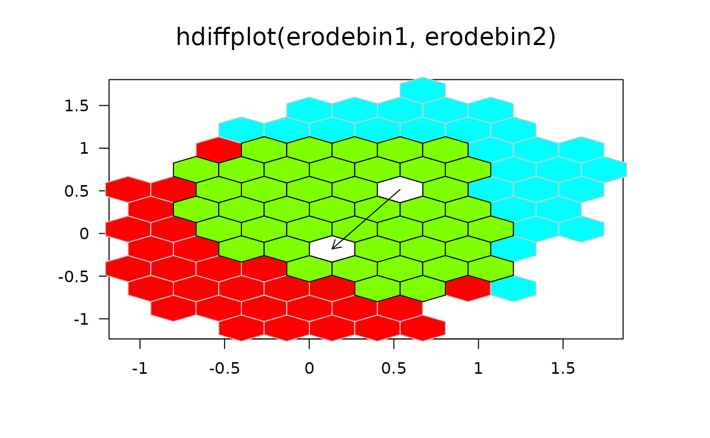
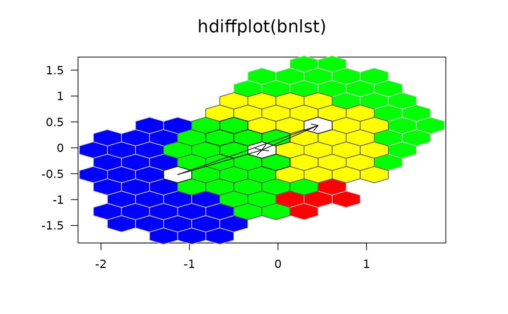

hdiffplot.RdLet bin1 and bin2 represent two hexbin
objects with scaling, plot shapes, and bin sizes. This plot
distinguishes cells unique to bin1, cells in common, and cells
unique to bin2 using color. When the erode components are
present, color also distinguishes the two erosion medians. An arrow
shows the vector from the median of bin1 to the median of
bin2.
hdiffplot(bin1, bin2 = NULL, xbnds, ybnds,
focus = NULL,<!-- % if(is.null(bin2)) 1:length(bin1) else c(1, 2), -->
col.control = list(medhex = "white", med.bord = "black",
focus = NULL, focus.border = NULL, back.col = "grey"),
arrows = TRUE, size = unit(0.1, "inches"), lwd = 2,
eps = 1e-6, unzoom = 1.08, clip="off", xlab = "", ylab = "",
main = deparse(mycall), ...)two objects of class hexbin.
global x- and y-axis plotting limits. Used primarily for multiple comparison plots.
a vector of integers specifying which hexbin objects should be treated as focal. Excluded hexbins are treated as background.
a list for detailed color control.
a logical indicating wheter or not to draw arrows between the focal hexbin objects median cells.
border arguments to polygon
arrow type size in inches.
distance criteria for distinct medians
plot limit expansion factor when xbnds is missing
either 'on' or 'off' are the allowed arguments, when on everything is clipped to the plotting region.
Line width for arrows, ignored when arrows=FALSE or
when bins have no erosion component
label for x-axis
label for y-axis
main title for the plot; automatically constructed by default.
...............
The hexbin objects for comparison, bin1 and bin2, must
have the same plotting limits and cell size. The plot produces a
comparison overlay of the cells in the two objects. If external
global scaling is not supplied, the algorithm determines plotting
limits to increase resolution. For example, the objects may be the
result of the erode.hexbin() and include only high count cells
containing 50 of the counts. The density, border, and pen arguments
correspond to the polygon function calls for plotting six types of
cells. The cell types are respectively:
| unique cells of bin1, |
| joint cells, |
| unique cells of bin2, |
| median cell of bin1, |
| median cell of bin2, |
| median cell if identical. |
The erode components of the hexbin objects must be present for the
medians to plot. The algorithm select a single cell for the median if
there are algorithmic ties.
The pen numbers for types of cells start at Pen 2. Pen 1 is
presumed black. The suggested six additional colors are light blue,
light gray, light red, blue, red, and black. Carr (1991) shows an
example for black and white printing. That plot changes the six
colors to light gray, dark gray, white, black, black, and black. It
changes the 4th, 5th, and 6th argument of border to TRUE. It also
changes 4th, 5th and 6th argument of density to 0. In other words
cells in common do not show and medians cells appear as outlines.
When xbnds is missing, the plot changes graphics parameters and
resets them. The function also zooms in based on the available data
to provide increased resolution.
see in grid.hexagons.
## Comparison of two bivariate boxplots
x1 <- rnorm(10000)
y1 <- rnorm(10000)
x2 <- rnorm(10000,mean=.5)
y2 <- rnorm(10000,mean=.5)
xbnds <- range(x1,x2)
ybnds <- range(y1,y2)
bin1 <- hexbin(x1,y1,xbnds=xbnds,ybnds=ybnds)
bin2 <- hexbin(x2,y2,xbnds=xbnds,ybnds=ybnds)
erodebin1 <- erode.hexbin(smooth.hexbin(bin1))
erodebin2 <- erode.hexbin(smooth.hexbin(bin2))
hdiffplot(erodebin1,erodebin2)

## Compare *three* of them: --------------------
x3 <- rnorm(10000,mean=-1)
y3 <- rnorm(10000,mean=-.5)
xbnds <- range(x1,x2,x3)
ybnds <- range(y1,y2,y3)
bin1 <- hexbin(x1,y1,xbnds=xbnds,ybnds=ybnds)
bin2 <- hexbin(x2,y2,xbnds=xbnds,ybnds=ybnds)
bin3 <- hexbin(x3,y3,xbnds=xbnds,ybnds=ybnds)
erodebin1 <- erode.hexbin(smooth.hexbin(bin1))
erodebin2 <- erode.hexbin(smooth.hexbin(bin2))
erodebin3 <- erode.hexbin(smooth.hexbin(bin3))
bnlst <- list(b1=erodebin1, b2=erodebin2, b3=erodebin3)
hdiffplot(bnlst)
